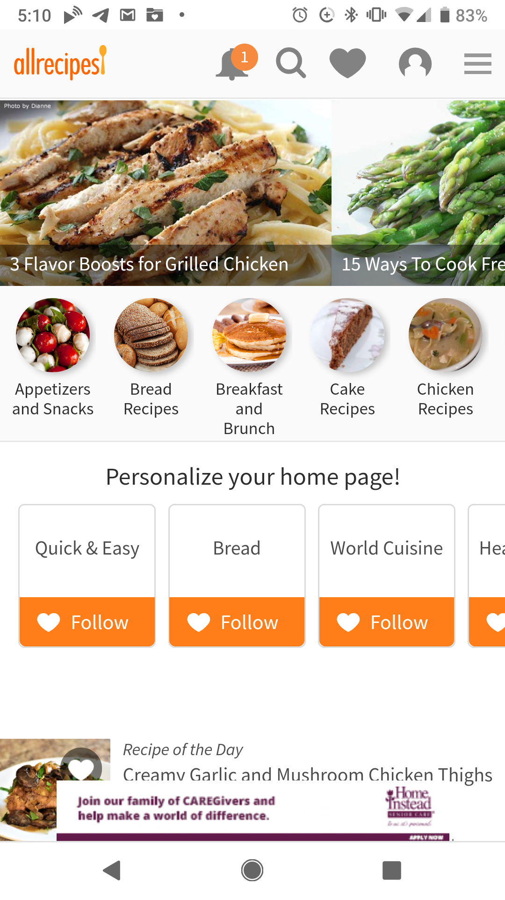
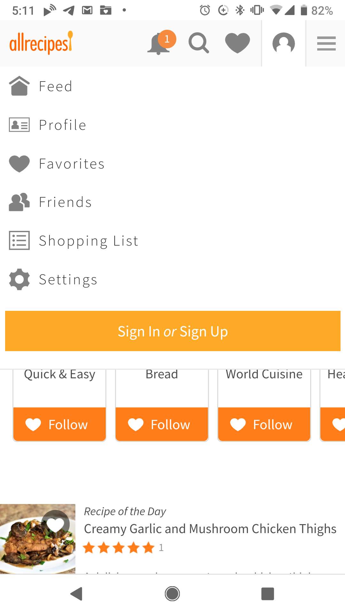
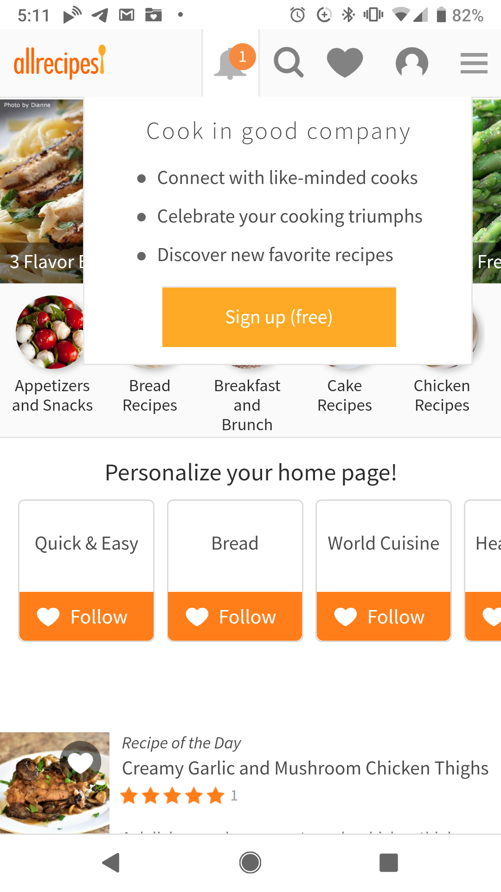
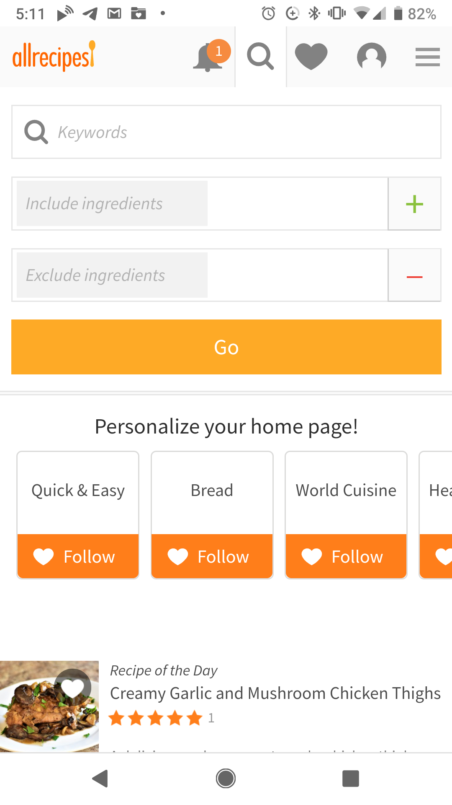
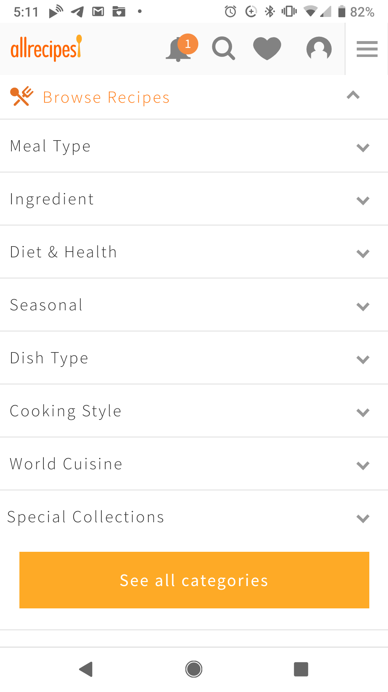
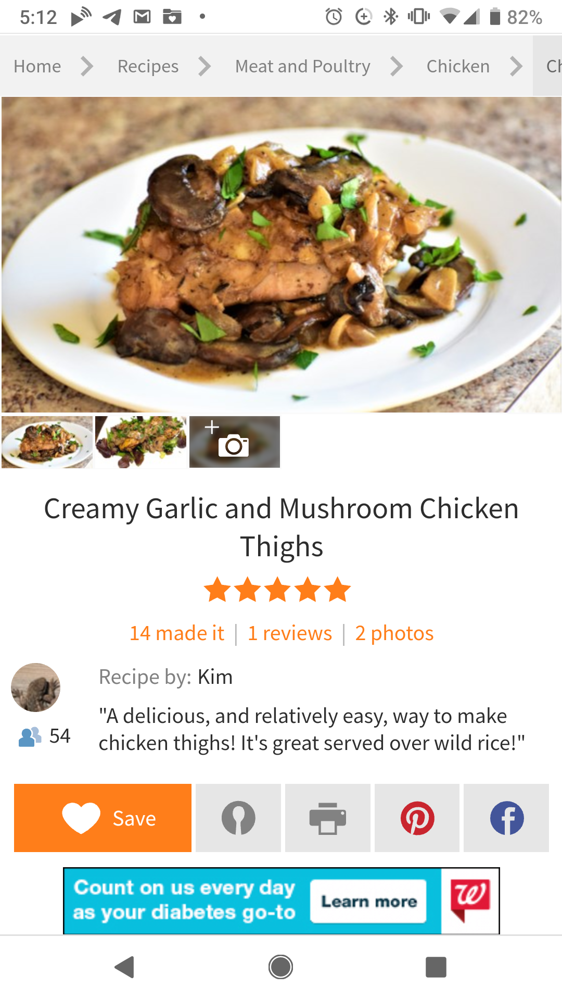

The Website:
Learning to cook used to be a lot harder. I'm serious; in the dark ages before the internet in order to learn how to cook you had to either find someone to teach you or find a big cookbook with lots of pictures to get you through it.
Thankfully, modern culinary adventurers have a host of websites flush with descriptions, photos, and sometimes videos to guide them through recipe after recipe.
Ever since I found allrecipes.com I've kept coming back to it. There is a bit of a learning curve, but let's see what the users think of it.
 Mobile: Screenshot of the allrecipes HomepageThe Testers
For this report, I enlisted the help of some brave volunteers:
- The Grandma - Female 60's, Infrequent Internet User, Favorite Website: Jigsaw Explorer.
- The Artist - Male 30's, Frequent Internet User, Favorite Website: Expedia.
- The Officer - Male 30's, Frequent Internet User, Favorite Website: Netflix.
- The (Cosplay) Princess - Female 20's Frequent Internet User, Favorite Website: Pinterest.
Seeing Double?
Click Here for last week's post on the allrecipes website, this week we are using the same criteria to review the mobile site.
Scenario 1
You're new to the page and want to set yourself up with an online recipe book. How do you do that?
 Mobile: Screenshot of allrecipes sign up windowResults:
The Grandma - Complained about the screen being so small. Pinched it to blow up the icons. Started looking for "Recipe Book" but couldn't find anything. I brought her attention back up to the navigation bar. She looked over the navigation bar and settled on the drop-down menu, she pressed it and couldn't find the Recipe Book. I pressed that you'd have to sign in first; after that she clicked on the sign-in button (which had shrunk considerably in mobile form).
The Artist - Wanted to download the app first. Was annoyed when they discovered that we were testing the mobile website, not the app. He scanned the navigation bar and saw the "little person icon" he pressed and set up an account.
The Officer - Insisted that he doesn't cook. He look the site up and down for a recipe book, went through some magazine articles and, after finding a recipe that "looked good" he clicked the "heart" button and was given the option to create an account in order to save recipe.
The Princess - Scanned the top banner, found the "Sign-up Person Icon". Pressed it, and got started.
Bonus Points to the Site:
I made note of this with the post last week. Normally, I find pop-ups to be incredibly annoying but the website did a good job reminding users that they could register to build an online recipe book.
 Mobile: Screenshot of allrecipes pop up windowScenario 2
You're at home. The dreaded call: someone is coming over, they're on their way. What are you going to feed them? Check the fridge: you have -
- A Potato
- An Onion
- Some Chicken
- Some Cream
Thank goodness the spices are stocked! Now, what can you make for dinner? How about dessert?  Mobile: Screenshot of the allrecipes ingredient search
Results:
Everyone was able to find the search the first time. From the main page, they pressed the image of the magnifying glass. From there, a pop-down menu appeared. On the desktop site, the Menu Item Search and the Ingredient Search are on the same line. In contrast, the mobile site puts one on top of the other which visually assisted the users in differentiating the two searches.
It was a surprising advantage over the desktop site as no one had any issue locating the search function that would best help them.
Scenario 3
It's dinner time, but you don't know what to make....can you find something for dinner? What about lunch?
 Mobile: Search by meal-typeResults:
The Grandma - Clicked on a tile that said "breakfast and lunch" and pulled up a bunch of recipes. She stated "well, we'll just have breakfast for dinner." and refused to look any deeper.
The Artist and the Officer both just typed "Dinner" and "Lunch" into the Menu Item Search bar from the Magnifying Glass Icon and pulled up the information that way.
The Princess - Found the "Browse" option hidden from the lined drop-down menu and selected the option for Dinner
Scenario 4
Your dish a hit but now everyone wants the recipe...how are you going to go about sharing it?
 Mobile: Save, Send or ShareResults:
The Grandma - Pulled up the recipe on the phone and once she had all of the ingredients in frame, made a screenshot and sent the image as a text....it took several screenshots.
The Artist and The Officer both found the Facebook sharable link and used that.
The Princess - Pinned her recipe to one of her boards and called that good.
Conclusion
A mobile website should serve as a user's portal to information when they do not have access to a computer. As smartphone
use grows however, more and more users may choose to onlyaccess the internet thought their mobile devices.
To prepare for this; all websites should be built with mobile in mind.
My take-aways from this test (small changes that might help user mobile-web experience) are:
- Keep the "Sign Up" icon yellow. It's yellow on the desktop version of the site, but on mobile it's grey and disappears into the nav bar.
- There were a lot of images on the homepage of the mobile site, it might be better to have fewer images. It was a little overwhelming to some of the users at first.
Can we talk about the Ingredient Search in Mobile:
I was shocked by how much more intuitive the mobile verion of the search was; from the search "magnifying glass" a menu appeared with both types of searches displayed all at once. It was so clean and made it much easier for the users to figure out at first glance.
Mobile: Screenshot of the allrecipes ingredient search